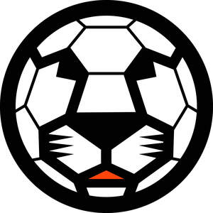
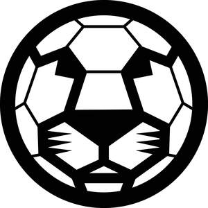

Trade Mark Journal No.2025/022 30 May 2025
UK00004203763 15 May 2025 (25,28,41)
Mark 1

Mark 2

- Class 25
- Clothing; Knitwear [clothing]; Jackets [clothing]; Ready-to-wear clothing; Woolen clothing; Garments for protecting clothing; Layettes [clothing]; Clothing layettes; Linen clothing; Headbands [clothing]; Headbands for clothing; Gloves [clothing]; Gloves as clothing; Clothes; Aprons [clothing]; Maternity clothing; Kerchiefs [clothing]; Jerseys [clothing]; Denims [clothing]; Shorts [clothing]; Cashmere clothing; Capes (clothing); Oilskins [clothing]; Gabardines [clothing]; Leather clothing; Clothing of leather; Leather (Clothing of -); Collars [clothing]; Parts of clothing, footwear and headgear; Silk clothing; Knitted clothing; Veils [clothing]; Corsets [clothing, foundation garments]; Windproof clothing; Embroidered clothing; Wristbands [clothing]; Belts [clothing]; Belts for clothing; Rainproof clothing; Waterproof clothing; Casual clothing; Bandeaux [clothing]; Visors [clothing]; Jackets being sports clothing; Jackets (Stuff -) [clothing]; Stuff jackets [clothing]; Playsuits [clothing]; Bottoms [clothing]; Clothing for leisure wear; Ready-made clothing; Latex clothing; Trunks being clothing; Woven clothing; Infant clothing; Drawers [clothing]; Drawers as clothing; Leisure clothing; Clothing for sports; Sports clothing; Ties [clothing]; Athletic clothing; Clothing for children; Muffs [clothing]; Bodies [clothing]; Clothing for babies; Tops [clothing]; Clothing for infants; Clothing for cycling; Weatherproof clothing; Pockets for clothing; Water-resistant clothing; Handwarmers [clothing]; Fabric belts [clothing]; Triathlon clothing; Clothing for skiing; Beach clothing; Thermal clothing; Chaps (clothing); Cowls [clothing]; Men's clothing; Fishing clothing; Mitts [clothing]; Dance clothing; Braces for clothing; Sports jerseys and breeches for sports; Sports clothing [other than golf gloves]; Sports shoes; Sports socks; Sports shirts; Sports jerseys; Sports pants; Sports caps; Boots for sports; Sports jackets; Sports bras; Clothes for sports; Sports singlets; Footwear for sports; Sports footwear; Sports garments; Sports bibs; Sports vests; Sport shoes.
- Class 28
- Sports balls; Balls for sports; Sport balls; Balls for racket sports; Balls for playing sports; Inflatable balls for sports; Soccer balls; Baseball balls; Tennis balls; Balls being sporting articles; Pumps for inflating sports balls; Golf balls; Rugby balls; Cricket balls; Softball balls; Lacrosse balls; Table-tennis balls; Polo balls; Nets for sporting ball games; Balls for games; Games (Balls for -); Field hockey balls; Racketball balls; Bowling balls; Futsal balls; Billiard balls; Cases for tennis balls; Floorball balls; Bocce balls; Balls for playing lacrosse; Balls for playing dodgeball; Balls for playing handball; Gym balls; Gloves for sports; Balls for playing field hockey; Playground balls; Sports games; Tennis uprights [sports equipment]; Balls for playing paddleball; Pads for use in sports; Balls for playing racketball; Bladders of balls for games; Javelins [for field sports]; Platform tennis balls; Balls for playing bocce; Soccer ball bags; Squash balls; Petanque balls; Nets for sports; Bandy balls; Medicine balls; Balls for playing bowls; Hammers for sports; Playing balls; Table tennis balls; Balls for playing platform tennis; Golf flags [sports articles]; Water polo balls; Balls for play; Tennis ball throwing machines; Balls for playing petanque; Balls for playing boules games; Balls for playing games; Tennis balls [not soft]; Rings for sports; Exercise balls; Billiard tally balls; Punching balls for boxing; Balls for juggling; Paintballs [sports apparatus]; Beach balls; Rubber balls; Lacrosse ball bags; Bats for ball games; Volley balls; Toy balls; Tennis ball retrievers; Bags adapted for bowling balls; Paddle balls; Soccer ball knee pads; Sports equipment; Paddle ball games; Tennis ball throwing apparatus; Punching balls [for boxing practice]; Nets for ball games; Tennis ball serving machines; Golf ball retrievers; Sport hoops; Billiard ball triangles; Gym balls for yoga; Protective cups for sports; Electronic targets for games and sports; Billiard ball racks; Curling brooms [sports articles]; Slingshots [sports articles]; Sports training apparatus.
- Class 41
- Training of sports teachers; Sports training; Training in sports; Training of sports players; Providing sports training facilities; Sports education services; Sports tuition, coaching and instruction; Training of swimming teachers; Education and training; Sports coaching; Sports coaching services; Sports camp services; Instruction in sports; Providing facilities for sporting events, sports and athletic competitions and awards programmes; Educational and training services relating to sport; Education, entertainment and sports; Sports instruction services; Tuition in sports; Sports tuition; Academies [education]; Services of schools [education]; Training and education services; Education and training services; Training of teachers; Education, teaching and training; Coaching in the field of sports; Training or education services in the field of life coaching; Organisation of sports tuition; Vocational education and training services; Education and training in the field of music and entertainment; Providing facilities for sports tournaments; Engineering training college services; Football academy services; Organization of sports competitions; Sport camp services; Camp services (Sport -); Teacher training services; Providing sports facilities for archery; Arranging and conducting of youth American football training programs; Competitions (Organization of sports -); Education, entertainment and sport services; Sports and fitness services; Operation of sports camps; Obedience school training for animals; Education services relating to sports; Sports club services; Vocational training; Sporting education services; Winter sports instruction; Training for automobile competitions; Organisation of sports activities for summer camps; Organising of sports competitions and sports events; Organising of sports events and of sports competitions; Medical training and teaching; Education and training consultancy; Educational and training services; Providing sports facilities for skiing; Arranging and conducting of youth soccer training programs; Boarding school education; Residential training courses; Organisation of sports competitions; Computer education training services; Sport camps; Recreation and training services; Computer education training; Organisation of sports events in the field of football; Vocational training services; Coaching [training]; Academy services (Education -); Education academy services; Academy education services; Training courses; Sports activities; Training; Organising of sports and sports events; Coaching services for sporting activities; Ski schools; Ballet schools; Sports and fitness; Summer camps [entertainment and education]; Conducting of sports competitions; Arranging and conducting of American football training programs; Education and training in the field of business management; Preparatory schools; Education services relating to vocational training; Linguistic education and training services; Aerobics training services; Provision of training and education; Provision of education and training; Rental services relating to equipment and facilities for education, entertainment, sports and culture; Sports facilities (Hire of -); Education academy services for teaching languages; Organisation of sports tournaments; Organization of competitions [education or entertainment]; Competitions (Organization of -) [education or entertainment]; Organization of competitions for education or entertainment; Boarding schools; Schools (Boarding -); Providing sports facilities for speed skating championships; Vocational training courses (Provision of -); Organization of education competitions; Education and training in the field of automotive engineering; Hire of sports facilities; Fitness training services; Providing facilities for sports events; Providing sports facilities for figure skating championships; Providing sports facilities; Providing of sports facilities; Education academy services for teaching construction drafting; Organisation of competitions [education or entertainment]; Organisation of competitions (education or entertainment); Competitions (organisation of -) [education or entertainment]; Organisation of competitions for education or entertainment; Organization of electronic sports competitions; Providing facilities for sports recreation; Secondary school educational services; Educational and training services relating to games; School services for the teaching of art; Educational services relating to sports; Educational and training programs in the field of risk management; Organisation of sporting competitions and sports events; Organisation of training courses; Residential education courses relating to archery; Religious training; Teaching academy services; Organizing and conducting college sport competitions; Instructional and training services; Dance schools; Education services relating to the training of personnel in food technology; Education services relating to business training; Provision of educational entertainment services for children in after school centers; Arranging and conducting of soccer training programs; Education academy services for teaching art history; Sports facilities (Leasing of -); Conducting of instructional, educational and training courses for young people and adults.
Neil John Carter